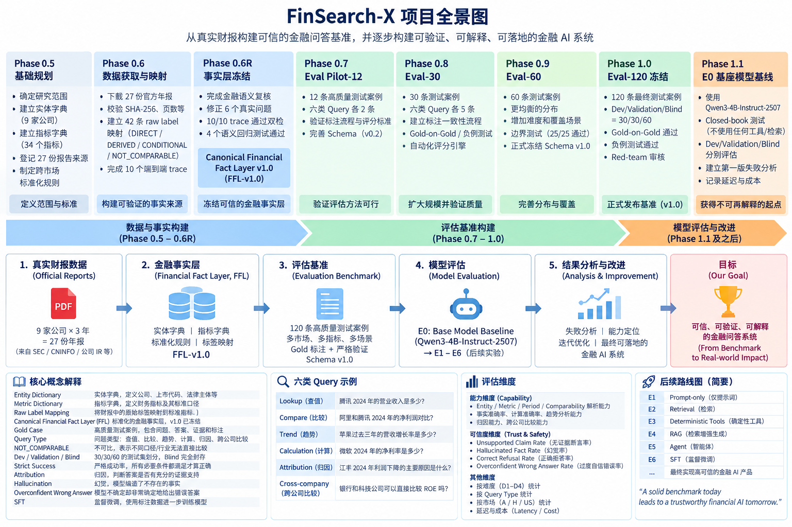

01
提出问题
明确公司、报告期与希望了解的指标。
财报答案旁边，放着数字、出处和还缺的那一块。

FinSearch-X 把财报问答收成研究卡。Financial Bot 接着做成能打开的产品：work 走完「问题到有来源的结论」，bot 在旁边看来源、时间和缺口。
财报问题往往同时涉及公司主体、报告期、币种、指标口径和计算方式。数字看起来合理，也可能来自错误的期间或不可比的口径；如果找不到出处，用户仍要重新查一遍。
产品目标是帮助研究者更快形成可核对的分析初稿，让判断依据与结论一起出现，而不是直接给出买卖建议。
先明确公司、报告期和问题，再从公开披露文件中定位事实。财务数字与口径需要保留出处；同比、利润率等计算交给确定性工具；模型帮助筛选证据和组织表达，不补写材料没有支持的原因。
当来源冲突、证据不足或口径不可比时，设计应清楚展示这些状态，让用户知道哪些结论需要继续核对。
明确公司、报告期与希望了解的指标。
将结论与数字、计算及披露出处关联。
查看证据状态，继续澄清或调整问题。
卡上有结论、数字、出处和缺口。下一问沿用这家公司和这个报告期，不用从头再找。
研究卡样例
错也会分开写，不混成一句「模型不太准」。
问的是 2024 年，答的是 2023 年。两个数本身可能都对，用错了年份。
本年和上年都找对了，同比公式除反了。出处还在，计算错了。
材料只写了收入下降。回答补了一句「因为需求走弱」。附注里没有这句话。
FinSearch-X 和 Financial Bot 是同一个项目：前者先把财报研究中的答案做得可核对；后者把这套研究方式延伸到对话式 Agent，让用户围绕公司、财务、新闻等问题开展研究。
答案指向公告、财报页或新闻链接，并标明数据时间。
资料没有支持的部分明确写出来，不替材料补造原因。
说明答案适合核对到什么程度，不把研究结果包装成买卖建议。
网页工作台提供两种入口：financial-work 走完“问题到有来源的结论”；研究助手 bot 在任务中选择工具，并把来源、时间和缺口展示出来。
当前可查看 financial-work 与 研究助手 bot。页面展示产品方向与当前入口；规划中的 Agent、数据源、长期记忆和评测能力不代表已经全部完成。